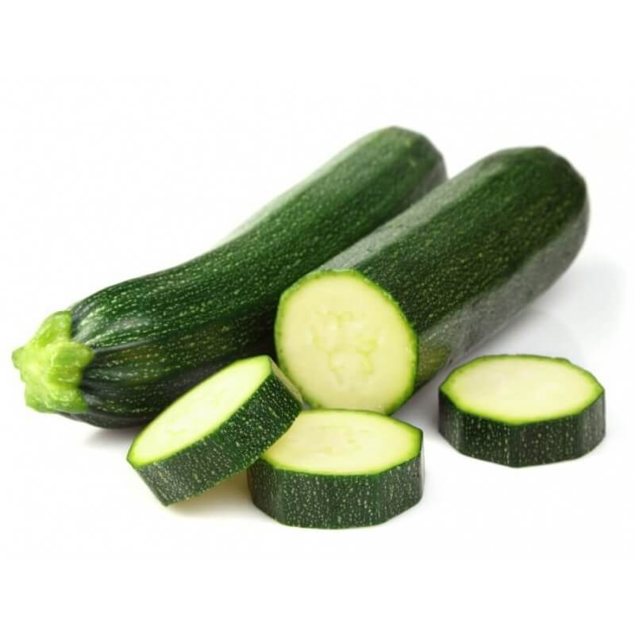

Zucchine

Coltivare in terreno molto ricco di materia organica e non coltivare dopo Solenacee o piante della stessa famiglia delle cucurbitacee.
Varietà: Zucchina chiara di Faenza
Periodo di semina:Marzo/Aprile
Primo racolto:Fine Aprile
Periodo raccolto:Fine Luglio
Raccolto
Dimensione Quantità
Piccole(10cm) 16
Medie(11-16cm) 26
Grandi(>16cm) 9
51
-->Acquista i semi<--